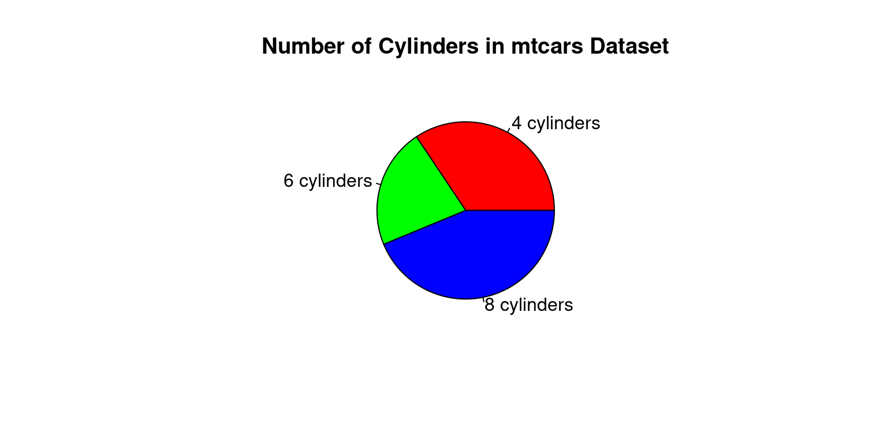
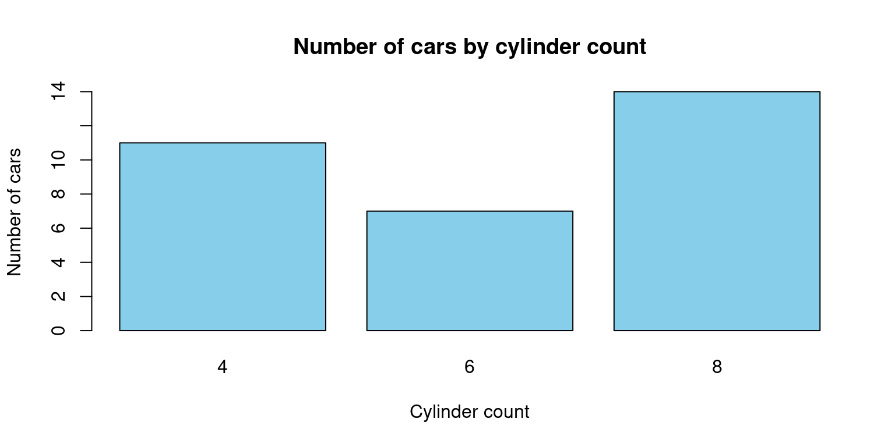
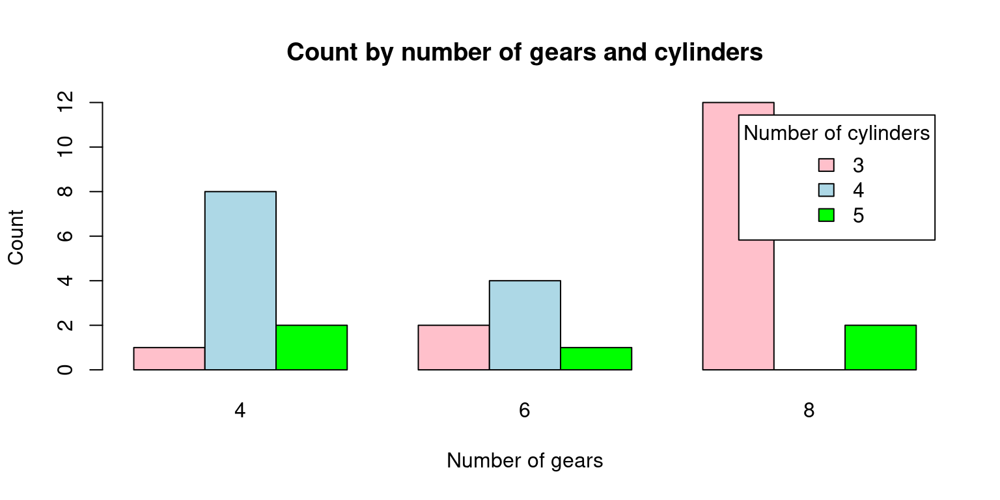
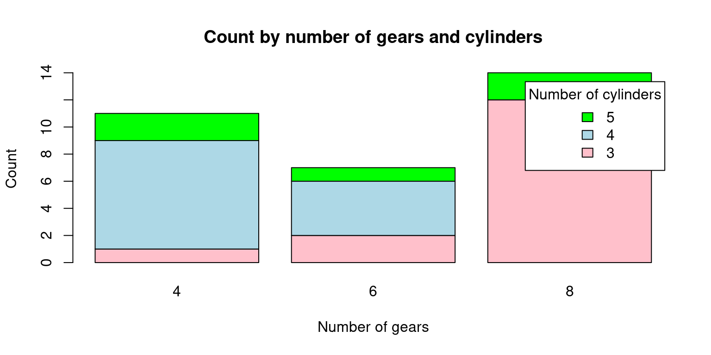
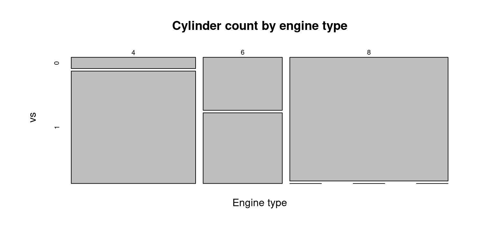
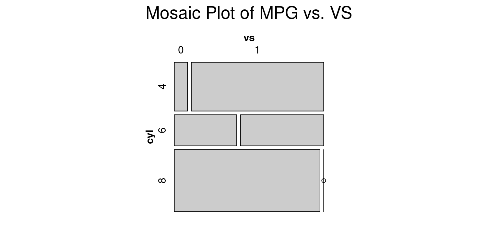
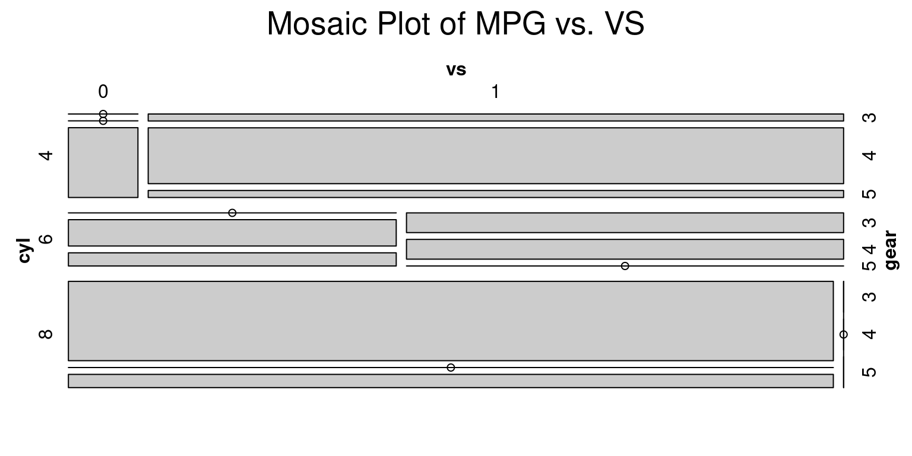

data(mtcars)
attach(mtcars)
t0 = table(cyl)
t0cyl
4 6 8
11 7 14 
July 26, 2023 V1.1 (Work in progress)
Categorical data is a type of data that can be divided into categories or groups.
Text labels or categorical codes like “male” and “female,” “red,” “green,” and “blue,” or “A,” “B,” and “C” are frequently used to describe category data. There are several typical examples of categorical data.:
Nominal and ordinal data are two types of categorical data.
Nominal data is a type of categorical data that has no inherent order or numerical value.
There are several ways to summarize categorical data in R.
table() function: The frequency table for a categorical vector is returned by the table() function.
data(mtcars)
attach(mtcars)
t0 = table(cyl)
t0cyl
4 6 8
11 7 14 summary()summary(cyl) Min. 1st Qu. Median Mean 3rd Qu. Max.
4.000 4.000 6.000 6.188 8.000 8.000 t1 = table(am, cyl)
t1 cyl
am 4 6 8
0 3 4 12
1 8 3 2In this example, a two-way frequency table of am and cyl is created using the table() function. The frequency of each grouping of categories is displayed in the table that results. As an illustration, there are 8 cars with a manual gearbox and 4 cylinders, while 3 have an automatic transmission and 3.
t1 =xtabs(~ cyl + gear
, data = mtcars)
t1 gear
cyl 3 4 5
4 1 8 2
6 2 4 1
8 12 0 2In this example, we generate a two-way contingency table of am and cyl using the xtab() method. The frequency of each grouping of categories is displayed in the table that results. As an illustration, there are 8 cars with a manual gearbox and 4 cylinders, while 3 have an automatic transmission and 3. Observe that the table() function used in the preceding example and the xtab() function both yield the same outcome.
t2 = ftable(gear ~ cyl
, data = mtcars)
t2 gear 3 4 5
cyl
4 1 8 2
6 2 4 1
8 12 0 2In this example, a two-way contingency table of gear and cyl is created using the ftable() function. The frequency of each grouping of categories is displayed in the table that results. As an illustration, there are 12 automobiles with 8 cylinders and 3 speeds as well as 1 car with 4 cylinders.
prop.tablep0 = prop.table(table(cyl))
p0cyl
4 6 8
0.34375 0.21875 0.43750 The prop.table() function is used in this example to determine the percentage of each category in the cyl variable of the mtcars dataset. The fraction of cars with 4, 6, and 8 cylinders, respectively, is represented in the resulting vector p0. For instance, the dataset contains cars with 4 cylinders in 34.375% of the cases.
prop.table
t1 = table(am, cyl)
p1 = prop.table(t1)
p1 cyl
am 4 6 8
0 0.09375 0.12500 0.37500
1 0.25000 0.09375 0.06250In this example, we generate a frequency table (t1) of the variables am and cyl from the mtcars dataset using the table() method. The frequency of each grouping of categories is displayed in the table that results. 12 automobiles, for instance, have a V-shaped engine, a manual transmission, and 8 cylinders. The same data are then used to generate a proportion table (p1) using the prop.table() function. The percentage of each combination of categories is displayed in the following table. For instance, the dataset contains 56.25% of vehicles with a manual transmission, a V-shaped engine, and 8 cylinders.
round()
r1 = round(p0*100,2)
r1cyl
4 6 8
34.38 21.88 43.75 r2 = round(p1*100,2)
r2 cyl
am 4 6 8
0 9.38 12.50 37.50
1 25.00 9.38 6.25In this example, we round the proportion tables p0 and p1 to two decimal places using the round() method. The proportion of each category or group of categories, rounded to two decimal places, is presented in the ensuing tables r1 and r2. For instance, 56.25% of automobiles have an automated transmission and 8 cylinders.
addmargins()The row and column sums of a matrix or table are calculated using the addmargins() function in R, and the sums are then added as new rows and columns to the original matrix or table.
r2 = round(p1*100,2)
m1 = addmargins(r2)
m1 cyl
am 4 6 8 Sum
0 9.38 12.50 37.50 59.38
1 25.00 9.38 6.25 40.63
Sum 34.38 21.88 43.75 100.01In this illustration, we add row and column margins to the rounded proportion table r2 using the addmargins() function. The proportion of each category or group of categories, rounded to two decimal places, is included in the resulting table m1, along with row and column margins that display the sums for each row and column. For example, the total proportion of cars with 8 cylinders is 60.42%.
table(cyl
, gear
, am), , am = 0
gear
cyl 3 4 5
4 1 2 0
6 2 2 0
8 12 0 0
, , am = 1
gear
cyl 3 4 5
4 0 6 2
6 0 2 1
8 0 0 2In this example, a three-way contingency table of cyl, gear, and am is created using the table() function. The frequency of each grouping of categories is displayed in the table that results. One vehicle has four cylinders, three gears, and an automatic transmission, whereas eight vehicles have four cylinders, four gears, and manual transmissions. The resulting table, which has a two-dimensional table for each level of the am variable, is three-dimensional.
xtabs(~ cyl + gear + am
, data = mtcars), , am = 0
gear
cyl 3 4 5
4 1 2 0
6 2 2 0
8 12 0 0
, , am = 1
gear
cyl 3 4 5
4 0 6 2
6 0 2 1
8 0 0 2In this example, a three-way contingency table of cyl, gear, and am is created using the xtabs() function. The frequency of each grouping of categories is displayed in the table that results. One vehicle has four cylinders, three gears, and an automatic transmission, whereas eight vehicles have four cylinders, four gears, and manual transmissions. The resulting table, which has a two-dimensional table for each level of the am variable, is three-dimensional. The output table matches the one created by the table() function used in the preceding example exactly.
ftable(gear + cyl ~ am
, data = mtcars) gear 3 4 5
cyl 4 6 8 4 6 8 4 6 8
am
0 1 2 12 2 2 0 0 0 0
1 0 0 0 6 2 0 2 1 2In this example, a three-way contingency table of gear, cyl, and am is created using the ftable() function. The frequency of each grouping of categories is displayed in the table that results. One car has four cylinders, three gears, and an automatic gearbox, whereas there are eight cars with four cylinders, four speeds, and manual transmissions. One table exists for each level of the am variable, resulting in a two-dimensional table. Similar to the table created by the xtabs() function used in the preceding example, the output table is produced.
ftable(am + cyl ~ gear + vs
, data = mtcars) am 0 1
cyl 4 6 8 4 6 8
gear vs
3 0 0 0 12 0 0 0
1 1 2 0 0 0 0
4 0 0 0 0 0 2 0
1 2 2 0 6 0 0
5 0 0 0 0 1 1 2
1 0 0 0 1 0 0In this example, we establish a four-way contingency table containing am, cyl, gear, and vs using the ftable() function. The frequency of each grouping of categories is displayed in the table that results. There are two vehicles with a 6-cylinder, 3-gear, automatic transmission, and inline engine, for instance, and three vehicles with four cylinders. The resulting table, which has two two-dimensional tables for each level of the am variable, is four-dimensional.
In statistics, a confidence interval is a set of values that is thought, with a certain degree of confidence, to contain the real population parameter. The degree of assurance that the genuine population parameter falls inside the interval is indicated by the confidence level, which is typically represented as a percentage.
A range of values that, with a particular degree of confidence, are likely to include the genuine population proportion is known as a confidence interval. The sample size, sample proportion, and desired level of confidence—which is typically stated as a percentage—are used to compute the interval.
The general formula for a 95% confidence interval for a population proportion is:
p̂ ± z*√(p̂(1-p̂)/n)
where: p̂ = sample proportion z = the Z-score corresponding to the desired level of confidence n = sample size
For example, suppose you conduct a survey of 1000 people and find that 120 of them support a particular political candidate. The sample proportion is p̂ = 120/1000 = 0.12. To find the 95% confidence interval for the population proportion, we can use the formula:
p̂ ± 1.96 * √(p̂(1-p̂)/n)
= 0.12 ± 1.96 * √(0.12(0.88)/1000)
= 0.12 ± 0.024
Thus, the population proportion’s 95% confidence interval is (0.096, 0.144). This indicates that the true population proportion is between 0.096 and 0.144 with a 95% confidence level.
The result is the mtcars data’s 95% confidence interval for the percentage of vehicles having automatic transmissions.
This indicates that we have a 95% confidence level that the population’s actual proportion of cars with automatic transmissions is between 0.2455 and 0.3694.
Justifying a claim based on a confidence interval for a population proportion involves two steps:
Interpreting the confidence interval: The confidence interval provides an estimate of the range of values that the true population proportion is likely to fall within. The interval’s confidence level expresses how confidently we can say that the true population proportion falls within the interval.
Making the claim: You can use the confidence interval to support a claim if it falls within the range of the interval. If, for instance, the claim is that at least 0.4 of individuals prefer a certain brand of cereal and the 95% confidence interval for the population proportion is between 0.38 and 0.42, you can still support the claim because 0.4 is within the range.
It is crucial to keep in mind that a confidence interval just provides an estimate of where the genuine population proportion is likely to be, not a guarantee. We are less convinced about the position of the genuine population percentage and the estimate’s uncertainty increases with the interval’s width.
Based on sample data, the difference between two population proportions is estimated using a confidence range for the difference between two proportions. When comparing the proportions of two different groups or treatments, this style of confidence interval is frequently utilised.
To calculate a confidence interval for the difference of two proportions, you need to have a sample of data from each group or treatment. The sample proportion for each group is then used to estimate the population proportion for that group.
Here’s the general formula for a confidence interval for the difference of two proportions:
CI = p1 - p2 ± z*sqrt(p1(1-p1)/n1 + p2(1-p2)/n2)
where:
p1 and p2 are the sample proportions for the two groups or treatments n1 and n2 are the sample sizes for the two groups or treatments z is the z-score that corresponds to the desired level of confidence (for example, 1.96 for a 95% confidence interval) sqrt(p1(1-p1)/n1 + p2(1-p2)/n2) is the standard error of the difference of two proportions The confidence interval gives a range of values that is likely to contain the true difference between the two population proportions with a certain level of confidence (for example, 95%). If the confidence interval does not include zero, it provides evidence that the two population proportions are different. The width of the confidence interval depends on the sample sizes, the sample proportions, and the level of confidence desired
A pie chart is a circular graph with wedges or slices cut out of it, each of which represents a certain percentage of the entire. Each slice’s size reflects the value it represents, while the chart’s overall area reflects the sum of all values.
Pie charts are frequently used to display percentages or proportions of a whole or the relative sizes of various categories. They are very helpful for displaying data with few categories or when highlighting a single category or value.
# Count the number of cars with each number of cylinders
cyl_counts <- table(mtcars$cyl)
# Create a pie chart
pie(cyl_counts, main = "Number of Cylinders in mtcars Dataset",
labels = c("4 cylinders", "6 cylinders", "8 cylinders"),
col = c("red", "green", "blue"))
The occurrences of each value of the cyl variable in the mtcars dataset are counted in this code using the table() function, and the resulting table is saved as cyl counts. The cyl counts variable provides the data for the pie chart, which is subsequently created using the pie() function. The chart’s title is determined by the main argument, while the labels argument assigns unique labels to the chart’s slices. The colours of the slices are specified by the col argument.
# Load the mtcars dataset
data(mtcars)
# Create a table of the counts of cars by number of cylinders
cyl_table <- table(mtcars$cyl)
# Create a barplot of the table
barplot(cyl_table,
main = "Number of cars by cylinder count",
xlab = "Cylinder count",
ylab = "Number of cars",
col = "skyblue")
By dividing the number of automobiles by the number of cylinders in the mtcars dataset, this code will produce a barplot. The barplot() function is used to generate the actual plot, while the table() function is used to generate a table of counts for the cyl variable in the mtcars dataset. The title and axis labels are added using the main, xlab, and ylab arguments, and the colour of the bars is altered with the col option.
# Load the mtcars dataset
data(mtcars)
# Create a matrix with count by number of gears and number of cylinders
counts <- table(mtcars$gear, mtcars$cyl)
# Create the bar plot
barplot(counts, beside = TRUE, col = c("pink", "lightblue", "green"),
xlab = "Number of gears", ylab = "Count",
main = "Count by number of gears and cylinders",
legend.text = rownames(counts), args.legend = list(title = "Number of cylinders"))
In this code, we first load the mtcars dataset. Then, we use the table() function to compute the counts by number of gears and number of cylinders. We store the result in a matrix called counts.
Finally, we use barplot() to create the plot. We pass the counts matrix as the first argument, and we set beside = TRUE to make sure that the bars are positioned side by side. We also set the colors of the bars using col, and we add labels to the plot using xlab, ylab, and main. We also add a legend to the plot using legend.text and args.legend. Note that rownames(counts) returns the row names of the matrix, which are the number of gears. We set the title of the legend to “Number of cylinders” using args.legend = list(title = “Number of cylinders”).
# Load the mtcars dataset
data(mtcars)
# Create a matrix with count by number of gears and number of cylinders
counts <- table(mtcars$gear, mtcars$cyl)
# Create the stacked bar plot
barplot(counts, col = c("pink", "lightblue", "green"),
xlab = "Number of gears", ylab = "Count",
main = "Count by number of gears and cylinders",
legend.text = rownames(counts), args.legend = list(title = "Number of cylinders"),
beside = FALSE)
In this code, we first load the mtcars dataset. Then, we use the table() function to compute the counts by number of gears and number of cylinders. We store the result in a matrix called counts.
Finally, we use barplot() to create the plot. We pass the counts matrix as the first argument, and we set beside = FALSE to make sure that the bars are stacked on top of each other. We also set the colors of the bars using col, and we add labels to the plot using xlab, ylab, and main. We also add a legend to the plot using legend.text and args.legend. Note that rownames(counts) returns the row names of the matrix, which are the number of gears. We set the title of the legend to “Number of cylinders” using args.legend = list(title = “Number of cylinders”).
The distribution of two categorical variables in a dataset is displayed graphically in a mosaic plot. Rectangular blocks with sizes proportionate to the number of observations for each combination of the two variables make up the plot. The relative frequency of each category of the second variable within each category of the first variable is represented by segments inside each block.
The interactions between categorical variables can be visualised using mosaic plots, which can also be used to find patterns and associations in large, complicated datasets. They can be used to identify breaks in independence or test hypotheses regarding the connections between the variables. They are especially helpful for examining interactions between two or more categorical variables.
# Load the mtcars dataset
data(mtcars)
# Create a mosaic plot of the data
mosaicplot(table(mtcars$cyl, mtcars$vs),
main = "Cylinder count by engine type",
xlab = "Engine type",
ylab = "vs")
With the help of this code, a mosaic plot of the number of vehicles in the mtcars dataset broken down by cylinder count and engine type will be produced (V-shaped or straight). The mosaicplot() method is used to generate the actual plot, and the table() function is used to generate a table of counts for the cyl and vs variables in the mtcars dataset. A title and axis labels are added using the main, xlab, and ylab variables.
To build a mosaic plot of the categorical data in mtcars that interests you, you can change this code. To plot the variables, simply swap out mtcars$cyl and mtcars$vs for the desired values. Remember that mosaic plots can be used to compare the distribution of categories within several groups.
# Load the mtcars dataset
data(mtcars)
# Install and load the vcd package (if it's not already installed)
install.packages("vcd")Installing package into '/cloud/lib/x86_64-pc-linux-gnu-library/4.3'
(as 'lib' is unspecified)library(vcd)Loading required package: grid# Create a mosaic plot of mpg (miles per gallon) vs. vs (engine shape)
mosaic(~ cyl + vs, data = mtcars, main = "Mosaic Plot of MPG vs. VS")
The mtcars dataset, a built-in dataset in R that contains data on 32 cars, is initially loaded by this code. The vcd package, which has utilities for making mosaic plots and other kinds of visualisations, is then installed and loaded by the code.
Finally, using the mosaic() function from the vcd package, the code generates a mosaic plot of the mpg (miles per gallon) and vs (engine shape) variables in the mtcars dataset. The resulting plot illustrates how vehicles with V-shaped vs. straight engines have different mpg distributions (vs values of 0 vs. 1, respectively).
# Load the mtcars dataset
data(mtcars)
# Install and load the vcd package (if it's not already installed)
install.packages("vcd")Installing package into '/cloud/lib/x86_64-pc-linux-gnu-library/4.3'
(as 'lib' is unspecified)library(vcd)
# Create a mosaic plot of mpg (miles per gallon) vs. vs (engine shape)
mosaic(~ cyl + vs + gear, data = mtcars, main = "Mosaic Plot of MPG vs. VS")
Healy, K., & Lenard, M. T. (2014). A practical guide to creating better looking plots in R. University of Oregon. https://escholarship.org/uc/item/07m6r
Few, S. (2004). Show me the numbers: Designing tables and graphs to enlighten. Analytics Press.
Friendly, M. (1994). Mosaic displays for multi-way contingency tables. Journal of the American Statistical Association, 89(425), 190-200.